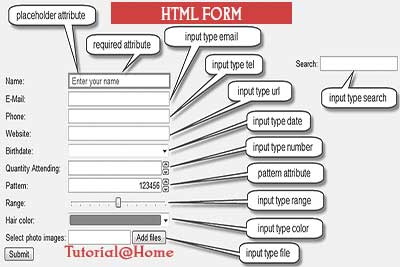
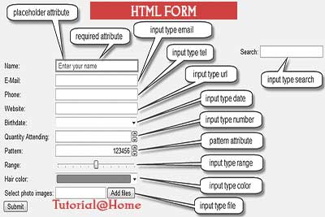

table employes

Les requêtes de SELECTion
.
| Commande | Description |
|---|---|
| selectionne les services de la table employes | |
| selectionne les noms et prenom de la table employes | |
| Nous selectionnons toutes les colonnes que nous souhaitons voir apparaitre dans le résultat. | |
| Afficher la table employes (toutes les colonnes / champs) avec le raccourci étoile " * " |
Le mot clé DISTINCT
Afficher les services occupés dans l’entreprise (en évitant les doublons cette fois-ci)
| Commande | Description |
|---|---|
| Le mot clé DISTINCT permet d'éviter les doublons. |
Les conditions : Le mot clé WHERE
| Commande | Description |
|---|---|
| Afficher les employes (nom et prénom) du service informatique (uniquement) |
Le mot clé BETWEEN
| Commande | Description |
|---|---|
| Afficher les employes ayant été recrutés entre 2006 et 2010 |
Operateurs de comparaisons
| Commande | Description |
|---|---|
| Afficher tous les employés sauf ceux du service informatique different | |
| Nous isolons une portion de résultats : seulement les employés gagnant + de 3 000 €. |
CURDATE() permet de sortir la date du jour (évolutive dans le temps)
| Commande | Description |
|---|---|
| Afficher les employes ayant été recrutés entre 2006 et aujourd'hui / la fonction crudate permet de dire jusqua aujourdhui |
Le mot clé LIKE
| Commande | Description |
|---|---|
| Afficher les employés ayant un prénom commençant par la lettre "S" | |
| Afficher les employés ayant un prénom qui se termine par la lettre "S" | |
| Dans notre cas, nous isolerons les prénoms composés (ayant un trait d'union). |
Les classements avec ORDER BY
ordre alphabétique
| Commande | Description |
|---|---|
| Nous pouvons également demander le classement inverse avec le mot clé DESC : | |
| Nous pouvons également réaliser plusieurs classements sur des champs/colonnes différents : |
Limiter les résultats avec le mot clé LIMIT
| Commande | Description |
|---|---|
| Le premier chiffre reste la position de laquelle on part, le second chiffre annonce toujours le nombre d'enregistrements à afficher (dans notre cas, on souhaite les afficher les 3 premier). |
Réaliser des calculs dans nos requêtes
| Commande | Description |
|---|---|
| Afficher la liste des employés avec leur salaire annuel (nous ferons un x12 pour simplifier le calcul dans le cadre de ce cours). |
Définir un ALIAS avec AS
| Commande | Description |
|---|---|
| Le mot clé AS permet de définir un ALIAS |
Calculer la somme d'une colonne avec SUM
| Commande | Description |
|---|---|
| Nous pourrions calculer la somme que l'on paye pour nos salariés en faisant la somme de la colonne salaire : |
Calculer une moyenne avec AVG
| Commande | Description |
|---|---|
| AVG est une fonction prédéfinie prenant comme argument (entre parenthèse) le nom de la colonne sur laquelle nous souhaitons calculer une moyenne. |
Arrondir avec ROUND
| Commande | Description |
|---|---|
ROUND est une fonction prédéfinie prenant comme argument (entre parenthèse) le nombre à arrondir : Nous aurions également pu inscrire : ROUND(AVG(salaire),2) pour obtenir 2 chiffres après la virgule (mais c'est déjà ce que nous avions de base). |
Compter avec COUNT
| Commande | Description |
|---|---|
| Dans ce contexte, cela nous permet de compter le nombre de femmes dans l'entreprise |
Isoler une valeur minimum/maximum avec MIN/MAX
| Commande | Description |
|---|---|
| Voyons comment trouver le salaire le plus faible dans notre liste d'employés : | |
| SELECT prenom, salaire FROM employes WHERE salaire = (SELECT MIN(salaire) FROM employes); |
Condition IN avec plusieurs valeurs
| Commande | Description |
|---|---|
| Cette requête nous permet d'afficher les informaticiens et comptables dans l'entreprise. | |
| Nous pouvons également exclure plusieurs valeurs avec NOT IN : |
Conditions multiples (différents champs et valeurs)
| Commande | Description |
|---|---|
| Dans cette requête nous demanderons à ce que les employés fassent partie du service commercial et gagnent un salaire supérieur ou égal a 2000 €. |
Ordre de priorité sur les conditions AND et OR
| Commande | Description |
|---|---|
| Dans cette requête nous partons dans l'idée de demander l'affichage des employés du service production gagnant un salaire de 1900 € ou 2300 € précisément. |
Les regroupements avec GROUP BY
| Commande | Description |
|---|---|
| Le mot clé COUNT permet de compter chaque ligne d'enregistrement (+1), tandis que GROUP BY permet de les grouper ensemble (tout les +1) en fonction du même service. | |
| Pour imposer une condition dans une requête comportant un GROUP BY, nous utiliserons le mot clé HAVING :
affichera tout les nombres demployer dans le service , superieur a 2 |
 
